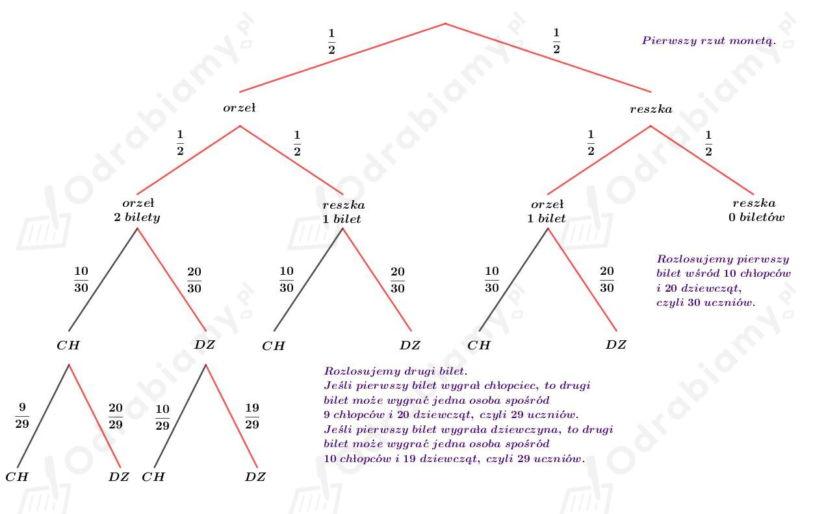
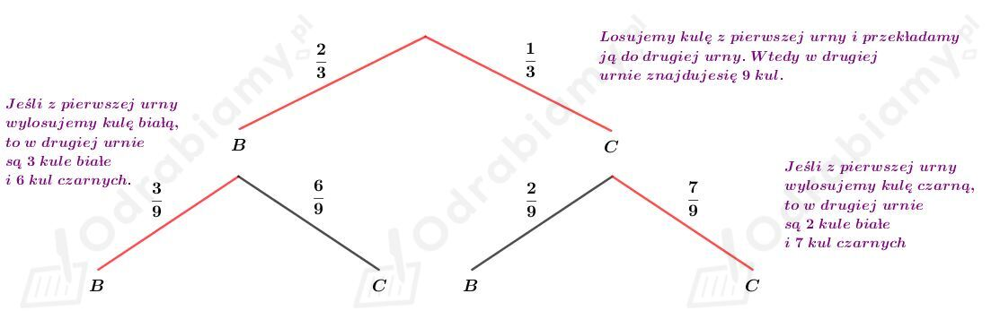

W klasie jest 30 uczniów - 10 chłopców i 20 dziewcząt. Liczba orłów otrzymanych w dwóch rzutach monetą jest równa liczbie biletów do kina, które będą rozlosowane w tej klasie.
Przedstawmy na drzewie ilustrację tego doświadczenia:

Niech A oznacza zdarzenie polegające na tym, że biletu nie otrzyma żaden chłopiec.
Wyznaczmy prawdopodobieństwo zdarzenia A. Mamy:
Odp. Prawdopodobieństwo tego, że biletu nie otrzyma żaden chłopiec wynosi 241/348.
W pierwszej urnie jest dwa razy więcej kul białych niż czarnych.
W drugiej urnie są 2 kule białe i 6 kul czarnych.
Przedstawiamy na drzewie ilustrację doświadczenia opisanego w treści zadania:

Niech A oznacza zdarzenie polegające na tym, że obie wylosowane kule są tego samego koloru.
Wyznaczmy prawdopodobieństwo zdarzenia A. Mamy:
Odp. Prawdopodobieństwo tego, że obie wylosowane kule są tego samego koloru wynosi 13/27.
Dane są dwie niesymetryczne kostki A i B. Na diagramach w zadaniu podano częstość występowania poszczególnych wyników rzutu.
Niech C oznacza zdarzenie polegające na wyrzuceniu sumy oczek większej od 10.
Aby otrzymać sumę oczek większą od 10 należy wylosować:
Prawdopodobieństwo wylosowania 5 na kostce A i 6 na kostce B wynosi:
Prawdopodobieństwo wylosowania 6 na kostce A i 5 na kostce B wynosi:
Prawdopodobieństwo wylosowania 6 na kostce A i 6 na kostce B wynosi:
Wyznaczmy prawdopodobieństwo otrzymania sumy oczek większej od 10 przy jednoczesnym rzucie kostkami A i B. Mamy:
Odp. Prawdopodobieństwo otrzymania sumy oczek większej od 10 wynosi 0,06.
Dana jest urna, w której jest n kul, w tym 3 kule są białe oraz n-3 kul czarnych. Zauważmy zatem, że n jest liczbą naturalną taką, że n>3.
Losujemy bez zwracania dwie kule. Prawdopodobieństwo wylosowania dwóch białych kul wynosi:
Z treści zadania, wiemy, że to prawdopodobieństwo jest równe 1/15. Stąd otrzymujemy równanie:
Wyznaczmy liczbę czarnych kul:
Odp. W tej urnie jest 7 czarnych kul.
Dana jest urna, w której jest n kul, w tym 4 kule są czarne oraz n-4 kul białych. Zauważmy zatem, że n jest liczbą naturalną taką, że n>4.
Losujemy bez zwracania dwie kule. Prawdopodobieństwo wylosowania dwóch kul różnego koloru wynosi:
Z treści zadania, wiemy, że to prawdopodobieństwo jest równe 4/7. Stąd otrzymujemy równanie:
W tej urnie jest 7 lub 8 kul.
Odp. W tej urnie są 3 lub 4 kule białe.
Dana jest urna, w której jest n+1 kul, w tym 1 kula jest czarna oraz jest n kul białych. Zauważmy zatem, że n jest liczbą naturalną taką, że n>0.
Losujemy bez zwracania dwie kule. Prawdopodobieństwo wylosowania dwóch białych kul wynosi:
Z treści zadania, wiemy, że to prawdopodobieństwo jest równe 2/3. Stąd otrzymujemy równanie:
Odp. W tej urnie jest 5 kul białych.
Dane są liczby 1, 2, 3, ..., 99.
Niech A oznacza zdarzenie polegające na tym, że za pierwszym razem wylosowano liczbę parzystą.
Wszystkich liczb jest 99, wśród tych liczb jest 49 liczb parzystych.
Wyznaczmy prawdopodobieństwo zdarzenia A. Mamy:
Niech B oznacza zdarzenie polegające na tym, że za drugim razem wylosowano liczbę parzystą.
Możliwości:
Wyznaczmy prawdopodobieństwo zdarzenia B. Mamy:
Niech C oznacza zdarzenie polegające na tym, że obie wylosowane liczby są parzyste.
Wyznaczmy prawdopodobieństwo zdarzenia C. Mamy:
Niech D oznacza zdarzenie polegające na tym, że suma wylosowanych liczb jest równa 100.
Mamy wtedy:
więc wszystkich takich par, których suma jest równa 100 jest:
Liczba wszystkich par, które możemy wylosować:
Wyznaczmy prawdopodobieństwo zdarzenia D. Mamy: